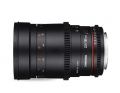

器材
党
全部器材
产品年表
名词百科
榜单
器材库
> 35mm画幅MF定焦镜头 > 135mm t/2.2

三阳
135mm t/2.2
分类
35mm画幅MF定焦镜头
点评
0 条
图片
0 张
评测
0 篇
相对于同焦段的其它品牌镜头来说，算是非常便宜的了。该镜头一口气推出了尼康，佳能，4/3系统，宾得，三星NX，富士以及索尼A和E卡口版本，几乎可以满足任何品牌的相机。
产品类型
35mm画幅MF定焦镜头
综合评分
暂无评分
无忌评测
暂无评测
规格参数
网友点评
(0)
产品图 / 样片
(0)
评测文章
(0)
详细规格
发布日期
2015-01-14
厂家推荐价格
599.00 （美元）
焦距
135mm
最大光圈
T2.2
最小光圈
T22
镜头结构
11片/7组
低/超低色散镜片
1片
光圈叶片
9片
最近对焦距离
80cm
滤镜口径
77mm
防抖
否
颜色
黑色
尺寸
82x148mm
重量
820~885g
该产品暂无存档的网友点评
该产品暂无存档的产品图
评测 / 相关文章
该产品暂无存档的评测文章
相关文章
［资讯］三阳135mm t/2.2 电影镜头
（原站已下线）